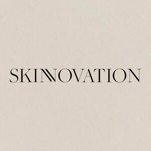

Trade Mark Journal No.2025/045 7 November 2025
UK00004283867 26 October 2025 (3)

- Class 3
- Face creams; Face and body creams; Face creams for cosmetic use; Face cream (Non-medicated -); Facial creams; Skin creams; Creams for the skin; Face and body lotions; Face gels; Face powders; Make-up for the face; Facial creams [cosmetics]; Cosmetic creams for firming skin around eyes; Face wash [cosmetic]; Cosmetic face powders; Face powders [for cosmetic use]; Hand creams; Face masks; Eye creams; Face wipes; Hair creams; Face oils; Face blusher; Shaving creams; Skin whitening creams; Creams (Skin whitening -); Creams (Non-medicated -) for the eyes; Body and facial creams [cosmetics]; Shave creams; Face wash; Face packs [cosmetic]; Lotions for face and body care; Face scrubs (Non-medicated -); Cosmetic creams for the skin; Skin creams [cosmetic]; Exfoliating scrubs for the face; Facial creams [cosmetic]; Facial creams [for cosmetic use]; Skin creams [for cosmetic use]; Skin lightening creams; Suntan creams [self-tanning creams]; Creams for firming the skin; Cosmetic hand creams; Liquid soaps for hands and face; Sunscreen creams; Face powder [for cosmetic use]; Body creams; Face scrub; Face and body masks; Toning lotion, for the face, body and hands; Non-medicated skin creams; Skin creams [non-medicated]; Face powder; Exfoliating creams; Anti-wrinkle creams; Moisturising skin creams [cosmetic]; Cosmetic creams for dry skin; Body creams [cosmetics]; Creams for tanning the skin; Exfoliant creams; Moisturizing creams; Face packs; Make-up for the face and body; Sun creams; Creamy face powder; Sun creams [for cosmetic use]; Moisturising creams; Face glitter; Cosmetic creams and lotions; Beauty creams; Face powder (Non-medicated -); Skin cream; Sun-tanning creams and lotions; Skin recovery creams [cosmetics]; After-sun creams; Sunscreen creams [for cosmetic use]; Face paints; Anti-aging creams; Suntan creams; Anti-ageing creams; Creams (Cosmetic -); Cosmetic creams; Hair protection creams; Make-up removing creams; Sun-tanning creams; Cream for whitening the skin; Whitening the skin (Cream for -); Depilatory creams; Cold creams; Facial cream; Pre-shave creams; Cleaning masks for the face; Washing creams; Face dusting powders; Body firming creams; Fair complexion creams; Make-up preparations for the face and body; Face and body glitter; Cosmetics in the form of creams; Cosmetic white face powder; Cleansing creams; Sun protecting creams [cosmetics]; Night creams [cosmetics]; Blemish balm creams; Scented body lotions and creams; Skin cream [for cosmetic use]; Cosmetic creams for skin care; Skin care creams [cosmetic]; Anti-wrinkle creams [for cosmetic use]; Day creams; Hair care creams; Moisturising creams, lotions and gels; Tanning creams; Face paint; Creams for fixing hair; Cold creams for cosmetic use; Eye wrinkle lotions; Beauty balm creams; Creams (Non-medicated -) for the body; Cosmetic massage creams; Scented body creams; Body mask cream; Skin moisturizer masks; Beauty tonics for application to the face; Toning creams [cosmetic]; Shower creams; Barrier creams.
Emma Louise smith